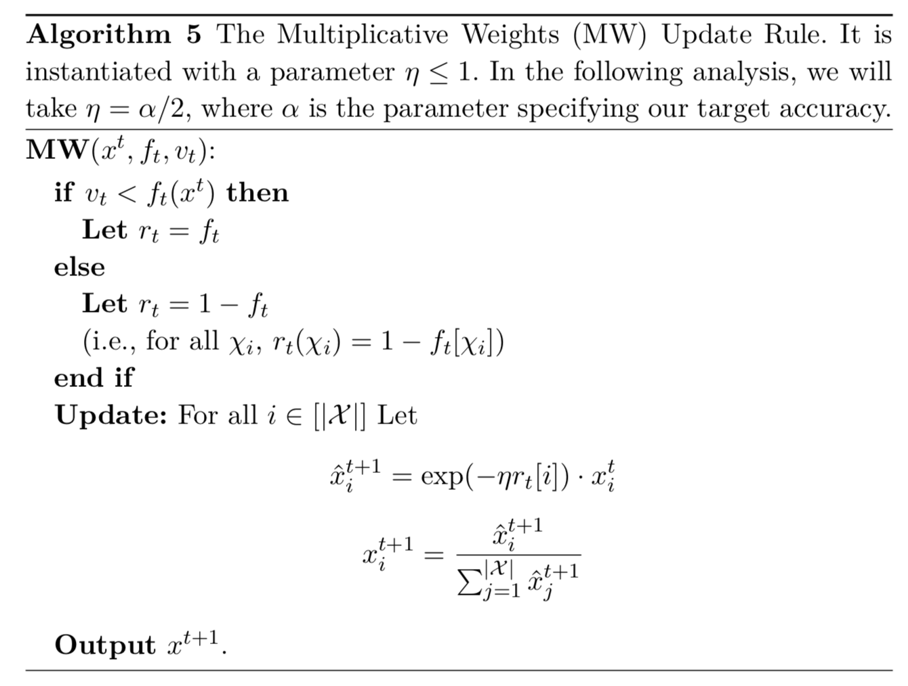

首先，我们给出可乘权重算法的更新规则，并在回答线性查询的语言中证明其收敛性定理。将数据库 x x x X \mathcal{X} X Δ ( [ X ] ) \Delta([\mathcal{X}]) Δ ( [ X ] ) [ ∣ X ∣ ] [|\mathcal{X}|] [ ∣ X ∣ ] x ∈ Δ ( [ X ] ) x \in\Delta([\mathcal{X}]) x ∈ Δ ( [ X ] )

定理 4.10 固定一类线性查询 Q \mathcal{Q} Q x ∈ Δ ( [ X ] ) x \in\Delta([\mathcal{X}]) x ∈ Δ ( [ X ] ) x 1 ∈ Δ ( [ X ] ) x^1 \in\Delta([\mathcal{X}]) x 1 ∈ Δ ( [ X ] ) X \mathcal{X} X x i 1 = 1 / ∣ X ∣ x_i^1=1/|\mathcal{X}| x i 1 = 1 / ∣ X ∣ x t x^t x t t ∈ { 2 , . . . , L } t\in\{2,...,L\} t ∈ { 2 , . . . , L } 算法5 中所述，通过设置 x t + 1 = M W ( x t , f t , v t ) x^{t+1}=\boldsymbol{MW}(x^t,f_t,v_t) x t + 1 = M W ( x t , f t , v t ) t t t f t ∈ Q f_t\in\mathcal{Q} f t ∈ Q v t ∈ R v_t \in\mathbb{R} v t ∈ R
1 . ∣ f t ( x ) − f t ( x t ) ∣ > α , and 2 . ∣ f t ( x ) − v t ∣ < α
\begin{aligned}
&1.\ |f_t(x)-f_t(x^t)|>\alpha,\text{and} \\
&2.\ |f_t(x)-v_t| <\alpha
\end{aligned}
1 . ∣ f t ( x ) − f t ( x t ) ∣ > α , and 2 . ∣ f t ( x ) − v t ∣ < α
则：
L ≤ 1 + 4 log ∣ X ∣ α 2
L\leq 1+\frac{4\log|\mathcal{X}|}{\alpha^2}
L ≤ 1 + α 2 4 log ∣ X ∣
注意，如果我们证明这个定理，我们将证明对于序列中的最后一个数据库 x L + 1 x^{L+1} x L + 1 f ∈ Q : ∣ f ( x ) − f ( x L + 1 ) ∣ ≤ α f\in \mathcal{Q}:|f(x)-f(x^{L+1})|\leq \alpha f ∈ Q : ∣ f ( x ) − f ( x L + 1 ) ∣ ≤ α L L L f t f_t f t ( L ) (L) ( L ) Q \mathcal{Q} Q x x x α \alpha α 在线可乘权重算法 将始终在 t t t x x x x t x^t x t f f f ∣ f ( x ) − f ( x t ) ∣ |f(x)-f(x^t)| ∣ f ( x ) − f ( x t ) ∣ f ( x ) f(x) f ( x ) f ( x ) + λ t f(x)+\lambda_t f ( x ) + λ t λ t \lambda_t λ t Laplace 分布得到。并且乘法权重算法更新规则将用参数 ( x t , f , f ( x ) + λ t ) (x^t,f,f(x)+\lambda_t) ( x t , f , f ( x ) + λ t ) 定理 4.10 条件 1 与 定理 4.10 条件 2 时被调用，则我们应用 定理4.10 可以得到这样一个结论：更新不那么多（因为 L L L x L + 1 x^{L+1} x L + 1 Q \mathcal{Q} Q
通过跟踪在 t t t x t x^t x t x x x Ψ \Psi Ψ 定理4.10 。（注：势函数（potential function）：在平摊分析（amortized analysis）的势能法中，用来描述过去资源的投入可在后来操作中使用程度的函数。在线算法通常使用平摊分析。详见维基百科与相关文章 ）
我们将会表明：
1.势函数开始时不会太大。
2.在每个更新回合中，势函数都会大量减少。
3.势函数总是非负的。
综合这三个事实，我们将得出这样的结论：更新回合不能太多。
现在让我们开始分析收敛定理的证明。
【证明定理 4.10】 我们必须证明任何属性为 ∣ f t ( x t ) − f t ( x ) ∣ > α |f_t(x^t)-f_t(x)|>\alpha ∣ f t ( x t ) − f t ( x ) ∣ > α ∣ v t − f t ( x ) ∣ < α |v_t - f_t(x)|<\alpha ∣ v t − f t ( x ) ∣ < α { ( x t , f t , v t ) } t = 1 , . . . , L \{(x^t,f_t,v_t)\}_{t=1,...,L} { ( x t , f t , v t ) } t = 1 , . . . , L L > 4 log ∣ X ∣ α 2 L>\frac{4\log|\mathcal{X}|}{\alpha^2} L > α 2 4 log ∣ X ∣
我们将势函数定义如下。回想一下我们将数据库作为概率分布(即，假设 ∥ x ∥ 1 = 1 \Vert x \Vert_1=1 ∥ x ∥ 1 = 1 x x x x t x^t x t KL散度
Ψ t = def K L ( x ∥ x t ) = ∑ i = 1 ∣ X ∣ x [ i ] log ( x [ i ] x t [ i ] )
\Psi_t \overset{\text{def}}{=} KL(x\Vert x^t) = \sum_{i=1}^{|\mathcal{X}|}x[i]\log\Big(\frac{x[i]}{x^t[i]}\Big)
Ψ t = def K L ( x ∥ x t ) = i = 1 ∑ ∣ X ∣ x [ i ] log ( x t [ i ] x [ i ] )
我们从一个简单的事实开始：
命题 4.11 对于所有的 t t t Ψ t ≥ 0 \Psi_t\geq 0 Ψ t ≥ 0 Ψ 1 ≤ log ∣ X ∣ \Psi_1\leq \log|\mathcal{X}| Ψ 1 ≤ log ∣ X ∣
【证明 命题 4.11】 证明相对熵（KL-散度）始终是非负的，需要借助对数和不等式，该不等式表示如果 a 1 , . . . , a n ; b 1 , . . . , b n a_1,...,a_n;b_1,...,b_n a 1 , . . . , a n ; b 1 , . . . , b n
∑ i a i log a i b i ≥ ( ∑ i a i ) ∑ i a i ∑ i b i
\sum_i a_i \log\frac{a_i}{b_i} \geq \Big(\sum_ia_i\Big)\frac{\sum_ia_i}{\sum_ib_i}
i ∑ a i log b i a i ≥ ( i ∑ a i ) ∑ i b i ∑ i a i
其次证明 Ψ 1 ≤ log ∣ X ∣ \Psi_1\leq \log|\mathcal{X}| Ψ 1 ≤ log ∣ X ∣ x 1 [ i ] = 1 / ∣ X ∣ x^1[i]=1/|\mathcal{X}| x 1 [ i ] = 1 / ∣ X ∣ Ψ 1 = ∑ i = 1 ∣ X ∣ x [ i ] log ( ∣ X ∣ x [ i ] ) \Psi_1 = \sum_{i=1}^{|\mathcal{X}|}x[i]\log(|\mathcal{X}|x[i]) Ψ 1 = ∑ i = 1 ∣ X ∣ x [ i ] log ( ∣ X ∣ x [ i ] ) x x x x [ 1 ] = 1 , x [ i ] = 0 , i > 1 x[1]=1,x[i]=0,i>1 x [ 1 ] = 1 , x [ i ] = 0 , i > 1 Ψ 1 \Psi_1 Ψ 1 Ψ 1 = log ∣ X ∣ \Psi_1 = \log|\mathcal{X}| Ψ 1 = log ∣ X ∣
【命题 4.11 证毕】
我们现在要讨论的是，在每一步，势函数至少下降了 α 2 / 4 \alpha^2/4 α 2 / 4 log ∣ X ∣ \log|\mathcal{X}| log ∣ X ∣ L ≤ 4 log ∣ X ∣ / α 2 L\leq 4\log|\mathcal{X}|/\alpha^2 L ≤ 4 log ∣ X ∣ / α 2
引理 4.12
Ψ t − Ψ t + 1 ≥ η ( ⟨ r t , x t ⟩ − ⟨ r t , x ⟩ ) − η 2
\Psi_t - \Psi_{t+1}\geq \eta\Big(⟨ r_t,x^t ⟩-⟨ r_t,x ⟩\Big) - \eta^2
Ψ t − Ψ t + 1 ≥ η ( ⟨ r t , x t ⟩ − ⟨ r t , x ⟩ ) − η 2
【证明】 由于 ∑ i = 1 ∣ X ∣ x [ i ] = 1 \sum_{i=1}^{|\mathcal{X}|}x[i]=1 ∑ i = 1 ∣ X ∣ x [ i ] = 1
Ψ t − Ψ t + 1 = ∑ i = 1 ∣ X ∣ x [ i ] log ( x [ i ] x t [ i ] ) − ∑ i = 1 ∣ X ∣ x [ i ] log ( x [ i ] x t + 1 [ i ] ) = ∑ i = 1 ∣ X ∣ x [ i ] log ( x t + 1 [ i ] x t [ i ] ) = ∑ i = 1 ∣ X ∣ x [ i ] log ( x ^ i t + 1 / ∑ i x ^ i t + 1 x t [ i ] ) = ∑ i = 1 ∣ X ∣ x [ i ] [ log ( x i t exp ( − η r t [ i ] ) x t [ i ] ) − log ( ∑ j = 1 ∣ X ∣ x j t exp ( − η r t [ j ] ) ) ] = − ( ∑ i = 1 ∣ X ∣ x [ i ] η r t [ i ] ) − log ( ∑ i = 1 ∣ X ∣ x j t exp ( − η r t [ j ] ) ) = − η ⟨ r t , x ⟩ − log ( ∑ i = 1 ∣ X ∣ x j t exp ( − η r t [ j ] ) ) ≥ − η ⟨ r t , x ⟩ − log ( ∑ i = 1 ∣ X ∣ x j t ( 1 + η 2 − η r t [ j ] ) ) = − η ⟨ r t , x ⟩ − log ( 1 + η 2 − η ⟨ r t , x t ⟩ ) ≥ η ( ⟨ r t , x t ⟩ − ⟨ r t , x ⟩ ) − η 2
\begin{aligned}
\Psi_t - \Psi_{t+1} &= \sum_{i=1}^{|\mathcal{X}|}x[i]\log\Big(\frac{x[i]}{x^t[i]}\Big) - \sum_{i=1}^{|\mathcal{X}|}x[i]\log\Big(\frac{x[i]}{x^{t+1}[i]}\Big)\\
&= \sum_{i=1}^{|\mathcal{X}|}x[i]\log\Big(\frac{x^{t+1}[i]}{x^t[i]}\Big)\\
&=\sum_{i=1}^{|\mathcal{X}|}x[i]\log\Big(\frac{\hat{x}_i^{t+1}/\sum_i\hat{x}_i^{t+1}}{x^t[i]}\Big)\\
&= \sum_{i=1}^{|\mathcal{X}|}x[i]\bigg[\log\Big(\frac{x_i^t\exp(-\eta r_t[i])}{x^t[i]}\Big)-\log\Big(\sum_{j=1}^{|\mathcal{X}|}x_j^t\exp(-\eta r_t[j])\Big)\bigg]\\
&= -\Bigg(\sum_{i=1}^{|\mathcal{X}|}x[i]\eta r_t[i]\Bigg)-\log\Bigg(\sum_{i=1}^{|\mathcal{X}|}x_j^t\exp(-\eta r_t[j])\Bigg)\\
&= -\eta ⟨r_t,x⟩ - \log\Bigg(\sum_{i=1}^{|\mathcal{X}|}x_j^t\exp(-\eta r_t[j])\Bigg)\\
&\geq -\eta ⟨r_t,x⟩ - \log\Bigg(\sum_{i=1}^{|\mathcal{X}|}x_j^t(1+\eta^2-\eta r_t[j])\Bigg)\\
&= -\eta ⟨r_t,x⟩ - \log\Big(1+\eta^2-\eta⟨r_t,x^t⟩\Big)\\
&\geq \eta\Big(⟨ r_t,x^t ⟩-⟨ r_t,x ⟩\Big) - \eta^2
\end{aligned}
Ψ t − Ψ t + 1 = i = 1 ∑ ∣ X ∣ x [ i ] log ( x t [ i ] x [ i ] ) − i = 1 ∑ ∣ X ∣ x [ i ] log ( x t + 1 [ i ] x [ i ] ) = i = 1 ∑ ∣ X ∣ x [ i ] log ( x t [ i ] x t + 1 [ i ] ) = i = 1 ∑ ∣ X ∣ x [ i ] log ( x t [ i ] x ^ i t + 1 / ∑ i x ^ i t + 1 ) = i = 1 ∑ ∣ X ∣ x [ i ] [ log ( x t [ i ] x i t exp ( − η r t [ i ] ) ) − log ( j = 1 ∑ ∣ X ∣ x j t exp ( − η r t [ j ] ) ) ] = − ( i = 1 ∑ ∣ X ∣ x [ i ] η r t [ i ] ) − log ( i = 1 ∑ ∣ X ∣ x j t exp ( − η r t [ j ] ) ) = − η ⟨ r t , x ⟩ − log ( i = 1 ∑ ∣ X ∣ x j t exp ( − η r t [ j ] ) ) ≥ − η ⟨ r t , x ⟩ − log ( i = 1 ∑ ∣ X ∣ x j t ( 1 + η 2 − η r t [ j ] ) ) = − η ⟨ r t , x ⟩ − log ( 1 + η 2 − η ⟨ r t , x t ⟩ ) ≥ η ( ⟨ r t , x t ⟩ − ⟨ r t , x ⟩ ) − η 2
第一个不等式由下面这个事实得出（注：泰勒公式和 r t [ j ] ∈ r t , r t [ j ] ≤ 1 r_t[j] \in r_t,r_t[j]\leq 1 r t [ j ] ∈ r t , r t [ j ] ≤ 1 ）：
exp ( − η r t [ j ] ) ≤ 1 − η r t [ j ] + η 2 ( r t [ j ] ) 2 ≤ 1 − η r t [ j ] + η 2
\exp(-\eta r_t[j])\leq 1-\eta r_t[j] + \eta^2 (r_t[j])^2\leq 1-\eta r_t[j] + \eta^2
exp ( − η r t [ j ] ) ≤ 1 − η r t [ j ] + η 2 ( r t [ j ] ) 2 ≤ 1 − η r t [ j ] + η 2
第二个不等式由对数不等式：log ( 1 + y ) ≤ y , y > 1 \log(1+y)\leq y,y>1 log ( 1 + y ) ≤ y , y > 1
【引理 4.12证毕】
有了前面的命题和引理之后，可以完成剩下的证明。 根据 数据库/查询序列 的条件（在上述 定理4.10 的假设中进行了描述），对于每一个 t t t
1 . ∣ f t ( x ) − f t ( x t ) ∣ > α , and 2 . ∣ f t ( x ) − v t ∣ < α
\begin{aligned}
&1.\ |f_t(x)-f_t(x^t)|>\alpha,\text{and} \\
&2.\ |f_t(x)-v_t| <\alpha
\end{aligned}
1 . ∣ f t ( x ) − f t ( x t ) ∣ > α , and 2 . ∣ f t ( x ) − v t ∣ < α
因此，当且仅当 v t < f t ( x t ) v_t < f_t(x^t) v t < f t ( x t ) f t ( x ) < f t ( x t ) f_t(x)<f_t(x^t) f t ( x ) < f t ( x t ) f t ( x t ) − f t ( x ) ≥ α f_t(x^t)-f_t(x)\geq \alpha f t ( x t ) − f t ( x ) ≥ α r t = f t r_t = f_t r t = f t f t ( x ) − f t ( x t ) ≥ α f_t(x)-f_t(x^t)\geq \alpha f t ( x ) − f t ( x t ) ≥ α r t = 1 − f t r_t = 1-f_t r t = 1 − f t 引理4.12 和 可乘权重更新规则中所述的 η = α / 2 \eta = \alpha/2 η = α / 2
Ψ t − Ψ t + 1 ≥ α 2 ( ⟨ r t , x t ⟩ − ⟨ r t , x ⟩ ) − α 2 4 ≥ α 2 ( α ) − α 2 4 = α 2 4
\Psi_t - \Psi_{t+1}\geq \frac{\alpha}{2}\Big(⟨ r_t,x^t ⟩-⟨ r_t,x ⟩\Big) - \frac{\alpha^2}{4} \geq \frac{\alpha}{2}(\alpha) - \frac{\alpha^2}{4} = \frac{\alpha^2}{4}
Ψ t − Ψ t + 1 ≥ 2 α ( ⟨ r t , x t ⟩ − ⟨ r t , x ⟩ ) − 4 α 2 ≥ 2 α ( α ) − 4 α 2 = 4 α 2
最后可知：
0 ≤ Ψ L ≤ Ψ 1 − L ⋅ α 2 4 ≤ log ∣ X ∣ − L ⋅ α 2 4
0 \leq \Psi_L\leq \Psi_1 - L\cdot\frac{\alpha^2}{4}\leq \log|\mathcal{X}|-L\cdot\frac{\alpha^2}{4}
0 ≤ Ψ L ≤ Ψ 1 − L ⋅ 4 α 2 ≤ log ∣ X ∣ − L ⋅ 4 α 2
变换得到：L ≤ 4 log ∣ X ∣ α 2 L \leq \frac{4\log|\mathcal{X}|}{\alpha^2} L ≤ α 2 4 log ∣ X ∣
【定理 4.10 证毕】